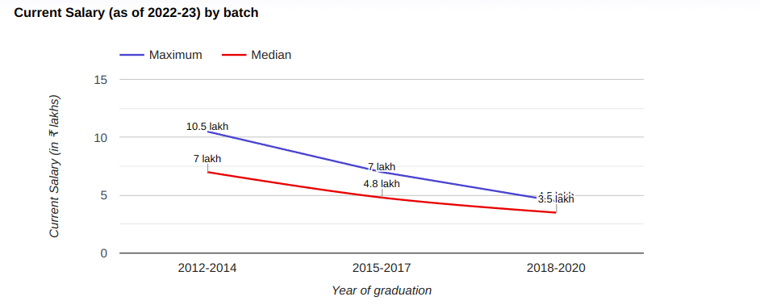

Situated in Maharashtra, Pimpri Chinchwad College of Engineering is a premier Institute incepted in 1999. The span of programs by Pimpri Chinchwad College of Engineering consists of Degree courses including 11 UG and 8 PG courses. These programs are offerred in Full Time mode. Pimpri Chinchwad College of Engineering offers a range of 11 UG and 8 PG courses, These courses are designed to provide students with the necessary skills and knowledge to chosen field. Candidate can pursue in multiple range of courses like B.E. / B.Tech, M.E./M.Tech, MCA with the stream of Engineering, IT & Software. Over the period, Pimpri Chinchwad College of Engineering gave offer to the students to gained expertize and proficiency through its trained and experienced faculty in the fields of Electronics Engineering, Mechanical Engineering, Civil Engineering, Computer Science Engineering, Information Technology, Artificial Intelligence & Machine Learning, Construction Engineering. Courses offered by institute are recognized and acknowlegded by approving bodies like AICTE. College offered courses with intake of 1032 candidates . For students institute have extraordinary facilities & infrastructure like Auditorium, Boys Hostel, Cafeteria, Girls Hostel, Gym, Hospital / Medical Facilities, Hostel, Labs, Library, Sports Complex, Wi-Fi Campus.
Programs Offered:

Placement Graph :
